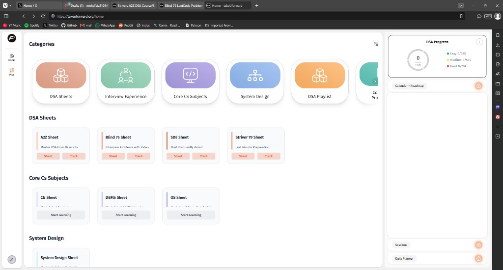

The same nav, three times
On Home the same categories sit on screen at once as a card row, as a sticky pill bar, and again as section headings. Three controls for one list, all asking to be scanned.
A small experiment and write-up from someone who has been following TUF's journey over a year,fewer steps between opening the app and the next problem.
My introduction to tuf was when striver went full-time with it, Since then I’ve been following tuf on and off, a lot more since you announced the Zenkai. I really love what you’re building, and I have a few ideas.
I gone through the three core flows: the Home dashboard, the DSA Sheets page, and the Interview Experience list and detail. I read each screen as a frontend engineer would layout, hierarchy, contrast, consistency, and how many actions stand between the user and their goal.
One structural thing stood out immediately: the app runs on two different page shells, and they don't match.
Home and the A2Z sheet keep a fixed right column (DSA Progress, Calendar + Roadmap, Sessions, Daily Planner). Content lives in roughly two-thirds of the width.
The Interview Experience pages drop the right rail and run full width. Same product, two different layout systems depending on which section you're in.
Neither is wrong on its own its just the observation I made
A few structural things, all visible in the screens. Each one costs the returning user time or hides content these are layout and flow changes, not new features.
On Home the same categories sit on screen at once as a card row, as a sticky pill bar, and again as section headings. Three controls for one list, all asking to be scanned.
Calendar + Roadmap, Sessions and Daily Planner hold a full column on Home and the sheet, yet render as large, near-empty panels prime space, little payload.
Categories and Popular Companies clip their last card behind a › chevron. Items exist, but they sit off-screen behind a horizontal scroll.
All frontend-only layout, components and structure. Each shaves steps or scanning off the user's path. Small surface, real time saved.
Lead with one category row at the top as the entry point, and let the section nav appear only on scroll so you never see the same list three times at once. The headings then go back to simply labelling content.
Replace the empty Calendar / Sessions / Planner panels with a compact, useful aside progress and an "up next" list or drop the rail and go full width. Either way, make the column pull its weight.
Swap the cut-off horizontal scrolls (Categories, Popular Companies) for a responsive grid that wraps. Everything stays on screen, nothing hides behind a chevron, and it adapts cleanly down to mobile.
Left: what the current Home does. Right: what my rebuilt Home (dashboard.html) does instead same content, fewer steps.
No mock-ups here this is the actual Home screen. The notes mark exactly where each observation lives.

The top card row scrolls horizontally and clips the last category behind a › chevron and it repeats the section headings below.
One card offers Sheet · Track, the next only Start Learning there's no single primary action repeated across the grid.
Calendar + Roadmap, Sessions and Daily Planner occupy a full column yet render mostly empty.
Screenshot: takeUforward Home, captured as-is for this audit.
To show rather than tell, I rebuilt the core screens as working, responsive pages same content, the fixes applied. Open them and compare.
One consistent primary action per card, the duplicate category row resolved into a single entry, and carousels swapped for grids that wrap. Component-level changes.
Collapse the triple category nav into one entry, reveal the section nav only on scroll, and make the right rail earn its column with progress and an up-next list.
Rebuilt Home → dashboard.html, the A2Z sheet → sheet.html, and the Interview flow → interview.html + detail. All responsive.
The base here is genuinely strong & I'm quick at: spotting where the interface costs the user time, and shipping clean, consistent UI that gets that time back.I have been following Zenkai updates since few days and really want to help with it.